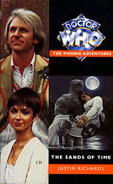

|
The Sands of Time
|
BASIC PLOT DOCTOR COMPANIONS MATERIALISATION CIRCUIT Pg 78 The banks of the River Nile, Ancient Egypt, somewhere between 2000BC and 1000BC (see Continuity Cock-Ups) Pg 97 The TARDIS materializes in Giza, Egypt, September, 1896 Pg 117 A brief visit to The British Museum in 1996 (although this happens out of sequence with the main narrative) Pg 177 The TARDIS materializes in London, 1996 Pg 217 The TARDIS arrives near Nephthys' tomb in 1996 Pg 231 The Great Pyramid, Egypt, 1996 Pg 243 Norris' cottage, Cornwall, 1996 Pg 251 The Basement of Kenilworth House, 1996 PREPARATORY READING CONTINUITY REFERENCES Pg 1 Some of the original Osirans - Anubis and Horus - appear. They were mentioned in Pyramids of Mars. Pgs 7-9 The Doctor briefly attends Cranleigh Hall and revisits some of the cast of Black Orchid. Pg 8 Ann Cranleigh mentions Adric, last seen redecorating Planet Earth for the dinosaurs at high speed in Earthshock. Pg 15 "'Where are we then?' Nyssa asked him before they could start arguing over the exact percentage of accurate landings the Doctor had recently accomplished." The Doctor had been trying to get Tegan home for much of the previous season, failing miserably. Pg 15-16 "'We need to know where we are, so we can work out how to get back on course.'" This is what the First Doctor told Ian and Barbara in The Daleks, a long time ago. Pg 16 "'Where's your sense of adventure?' 'Mine died a long and lingering death somewhere in Amsterdam.' In Arc of Infinity. Pg 18 Tegan's clothing makes it clear that this story takes place immediately after Arc of Infinity. Pg 41 This is a mythological retelling of a section of Osiran history (accurately told on Pgs 157-158) Pgs 43-44 Tegan contemplates the repercussions of Adric's death, from Earthshock. Pg 50 "'My father's dead.' And for the first time Nyssa found she really believed that." He was taken over by the Master in The Keeper of Traken (but see Continuity Cock-Ups) Pg 51 Reference to Traken, as in The Keeper of Traken. Pg 52 "A phrase of Tegan's lingered in the back of her memory; 'Cross my heart.'" I can hear Janet Fielding saying the line, but I can't remember in which story. It might be Castrovalva. Pg 55 "'If good old Blinovitch could see me now.'" Blinovitch is mentioned frequently throughout The Sands of Time. The Blinovitch Limitation effect is first mentioned in Day of the Daleks and is a vital part of the plot of Mawdryn Undead. The Doctor is also very worried about it in The Eleventh Tiger. Pgs 57-58 "A faint glow suffused the air around the ornate pupil, a reflection perhaps of the torches above it as they clustered in the doorway. Then Massud stepped tentatively over the threshold. And the eye at his feet flashed brilliant red." The glowing Eye of Horus was also prominent in Pyramids of Mars. Pg 63 "'Ironic really: four thousand years asleep and she'll be tired.'" Given the events of Kinda, it turns out that Nyssa must really like her sleep. Pg 64 "He returned his attention to the picture. 'More like a century,' he muttered. 'Just look at the brushwork on that.'" Not strictly continuity, but Richard's characterization of the Fifth Doctor is spot-on, right down to this glorious little change of subject when he's embarrassed. Pg 76 More Osiran history disguised as Egyptian myth (accurately told on Pgs 157-158) Pg 82 "'That's not what you said when we wanted to go back and save Adric.'" Adric, as we know by now, died in Earthshock. Nyssa and Tegan demanded to go back and save him in the opening moments of Time-Flight. Pg 85 "'Always meant to pop back and see. But the trouble with being a Time Lord is that you never seem to have the time.'" This is almost word-for-word what the Doctor says about the Dinosaurs in Earthshock. Given that Earthshock also ended up with a companion dead, you'd think he'd be more careful about what he was quoting. Pg 86 "Her last thought as she lost consciousness, her last thought for millennia, was that, wherever she was going, she might find her father." Tremas, from The Keeper of Traken. Pg 106 "'A religious problem, sir.'" Similar religious problems occurred at Marcus Scarman's opening of Sutekh's tomb in Pyramids of Mars. Pg 110 The twin guardians of Horus pose a riddle, just as they did in Pyramids of Mars. This one's a little more complicated, however. Pg 135 The Doctor gives Tegan a potted summary the story of Sutekh, ending with the line "He was cornered on Earth by Horus and seven hundred and forty of his fellow Osirans [the Egyptian Pantheon] and imprisoned for all eternity beneath a pyramid." This line is an almost direct quote of Pyramids of Mars. Pg 136 "'Till he [Sutekh] escapes in nineteen eleven, it is, yes.' The Doctor waved away her worried expression. 'But that's all sorted out now.'" In Pyramids of Mars. Pg 162 Not continuity, but, as the Doctor and Tegan return to London just before they first arrived, the time travel loop starts snapping shut with the same satisfaction you feel at the end of The Shawshank Redemption. Pg 171 "Tegan frowned. 'So we can't change anything?' 'Well, I have seen it done. But never without immense cost, and always so that history returns to its original track.'" The Doctor's experience with alternate timelines include Inferno (the obvious one) and The Man in the Velvet Mask among others I haven't read yet (probably). In later years, the Doctor would have much more problems with them as not one but two alternative universe arcs in the NAs (Blood Heat to No Future) and the 8DAs (Time Zero to Timeless), amongst others. Pg 175 "As Rassul watched, Simons's body slowly crumbled away until only a fine dust remained. A sudden, impossible breeze cleaned it from the stone floor." The sudden, impossible (great adjective!) breeze has been a staple of anything in Who that dissolves to dust, particularly anything that gets aged to death (Sara Kingdom, the Vampires in State of Decay etc.) Pg 185 The presence of an organ in Kenilworth house is a nod to what I had assumed was incidental music in Pyramids of Mars. But see below. Pgs 187-189 include a pretty thorough synopsis of Pyramids of Mars and the background from Phaester Osiris. Pg 211 "The Doctor did not sleep that night. This was not unusual." As he once remarked (Talons of Weng-Chiang), "sleep is for tortoises". "He read every word of each of the books at lightning speed." As he was clearly capable of doing in City of Death. Pg 234 "On Mars they either did the building themselves, or found another religiously fanatical people to do it for them. I can think of a couple of candidates." So can I, the Ice Warriors (The Ice Warriors, The Seeds of Death, The Curse of Peladon, The Monster of Peladon, GodEngine) are number one on my list. Pg 235 "The original face of the Sphinx was the face of Horus" According to the audio adventure The Eye of the Scorpion, the Sphinx's face was at one time modeled on Elvis Presley. Pg 241 "Then [the Doctor] would peer through his half-moon spectacles, frown, make a hurried annotation in the margin, and push the document away again." The Fifth Doctor seems to suffer from short-sightedness; these same spectacles were seen in Four to Doomsday. Pgs 241-242 "'Of course,' he said on one such occasion, smacking his palm to his forehead. 'They actually convinced Scaroth that building the pyramids would help human evolution in the way he needed.'" City of Death. This is glorious use of continuity, simultaneously matching up two disparate stories and making them work together. Pg 246 neatly combines the backstory of Pyramids of Mars with this tale. Pg 247 "She appeared in the appointed place at the time foretold. And she was without sin or blemish." Yup. Nyssa's a virgin. We all knew that. She has rectified this by the time of her appearance in Asylum. Pg 249 "'Which probably excluded external influence and energy rather as the Zero Room here in the TARDIS.'" The Zero Room was seen in Castrovalva. "'Think of it. Nyssa is from the Traken Union. For all her life the Keeper and the Source ruled such that there was no concept even of evil. What more pure mind could one hope to find anywhere in the universe?'" All of this comes from The Keeper of Traken. Probably a good job that Nephthys didn't try to gain her release when the Doctor was traveling with Ace and Benny. Pg 254 "Rassul smiled, his face cracked across with satisfaction as from behind him a loud swell of discordant music rose from the organ." Turns out it wasn't incidental music in Pyramids of Mars, but the organ was really playing. This keeps happening as the book continues and actually never fails to raise a smile. Pg 264 "No.' The voice rang across the chamber like a chord from a giant organ." You see? Even Vanessa's voice sounds like an organ. Pg 266 Prior's death echoes exactly what happened to Lawrence Scarman. Pg 277 "'Abase yourselves,' she ordered. 'You are as nothing before the power of Nephthys.'" This again reflects a similar sequence in Pyramids of Mars. Pg 285 The thermal balance effect of the time corridor again echoes Pyramids of Mars. "'The sands of time wash us all clean,' he said quietly." The Doctor almost repeats this phrase in Timelash (it's 'the Waves of time' in that story). Pg 286 "'That's the delta wave augmenter, isn't it Doctor?'" Previously seen in Kinda. "Yes. Though I had to rig up another delta source to replace the sonic screwdriver, of course." It was destroyed in The Visitation. Pg 288 "'Sometimes, Tegan,' the Doctor said, 'you take my breath away.'" I'm pretty sure the Doctor repeats this exact phrase in The Five Doctors, but it might be another adventure. Any thoughts? Pg 289 When Nyssa wakes up, she says 'I've had the strangest dream,' which is pretty much what Tegan said after she had been possessed by the Mara in Kinda. Pg 292 The arrival of Professor Marcus Scarman, wraps the story back to Pyramids of Mars again. OLD FRIENDS AND OLD ENEMIES The Mummies Return! (On Pg 139) From Pyramids of Mars. Napoleon Bonaparte, one-time ruler of France and invader of numerous other countries, came to power following the Terror (as orchestrated by Robespierre among others) and is probably the one of the most important people on the European historical stage. He has cameo roles in this story, The Reign of Terror and Emotional Chemistry. Professor Marcus Scarman makes a cameo appearance. NEW FRIENDS AND NEW ENEMIES In 1996, England, Aubrey Prior, his daughter (genetically engineered), Vanessa and James Norris, her fiance. In Ancient Egypt, Amosis, Priest of Nephthys, Sitamun, handmaiden to same. In 1996, Egypt, Kamose, a beggar who catches a lift in the TARDIS
CONTINUITY COCK-UPS PLUGGING THE HOLES [Fan-wank theorizing of how to fix continuity cock-ups] FEATURED ALIEN RACES FEATURED LOCATIONS Ancient Egypt, 5000BC Mena House Oberoi Hotel, Giza, September 1896 Cranleigh Hall, Oxfordshire, 1926 Kenilworth House, 1965 London, a few days in early November, 1896. Specific locations include the Egyptian Room of the British Museum, The Savoy Hotel and Kenilworth House Ancient Egypt, near Nyssa's/Nephthys' tomb. Much dialogue suggests that this around 2000BC, but this is contradicted in other dialogue, and could be as late as 1000BC. (See Continuity Cock-ups) The Valley of the Kings, 2000BC London, 1975 Egypt - the above hotel, Nyssa's/Nephthys' tomb and traveling between the two, from September, 1896. A planning office in London, 1986 (or at least a letter is sent from there). The British Museum, 1996 Phaester Osiris, the Distant Past Egypt, January 1897 London, 1996, once again touring to Kenilworth House and environs, as well as a swift car trip to Cornwall. Sotheby's Auction House, 1978 The Great Pyramid, Egypt, 1798 Near Nephthys' tomb, Egypt, 1996 St. Helena, the island of Napoleon's incarceration, 1821 The Great Pyramid, Egypt, 1996 In London, in 1991, Kenilworth House burns. Cleopatra's Needle, London, 1880 IN SUMMARY - Anthony Wilson |
|
 |